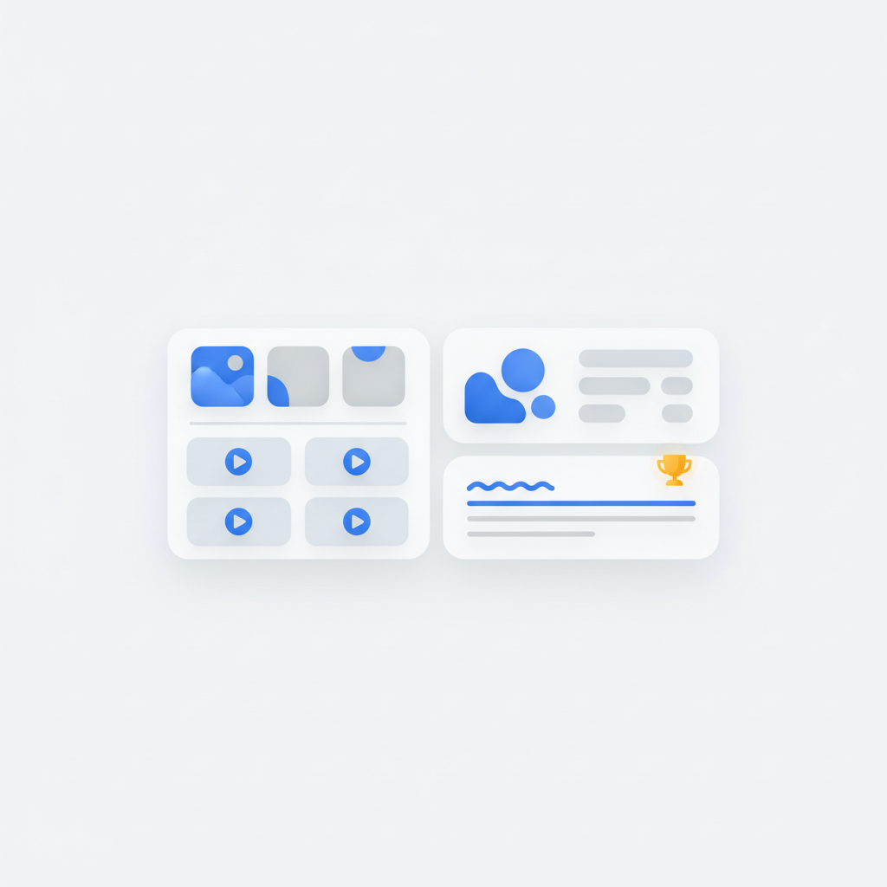
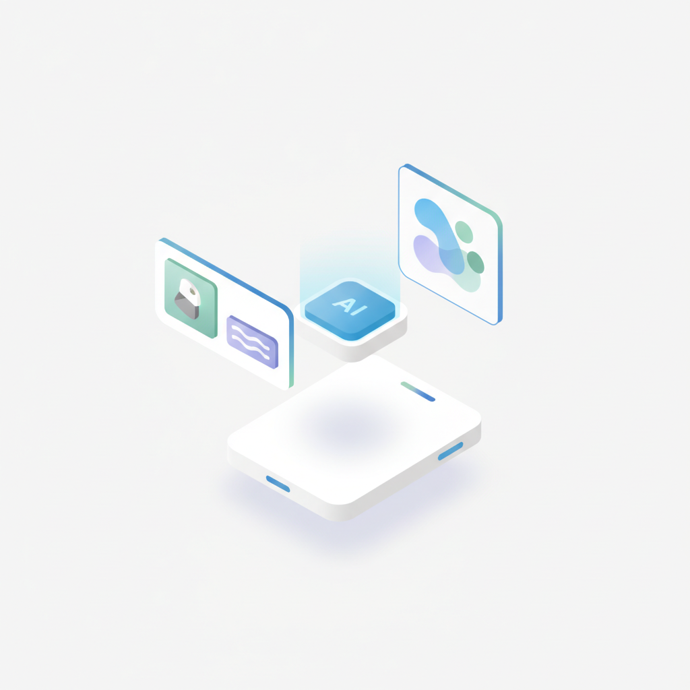
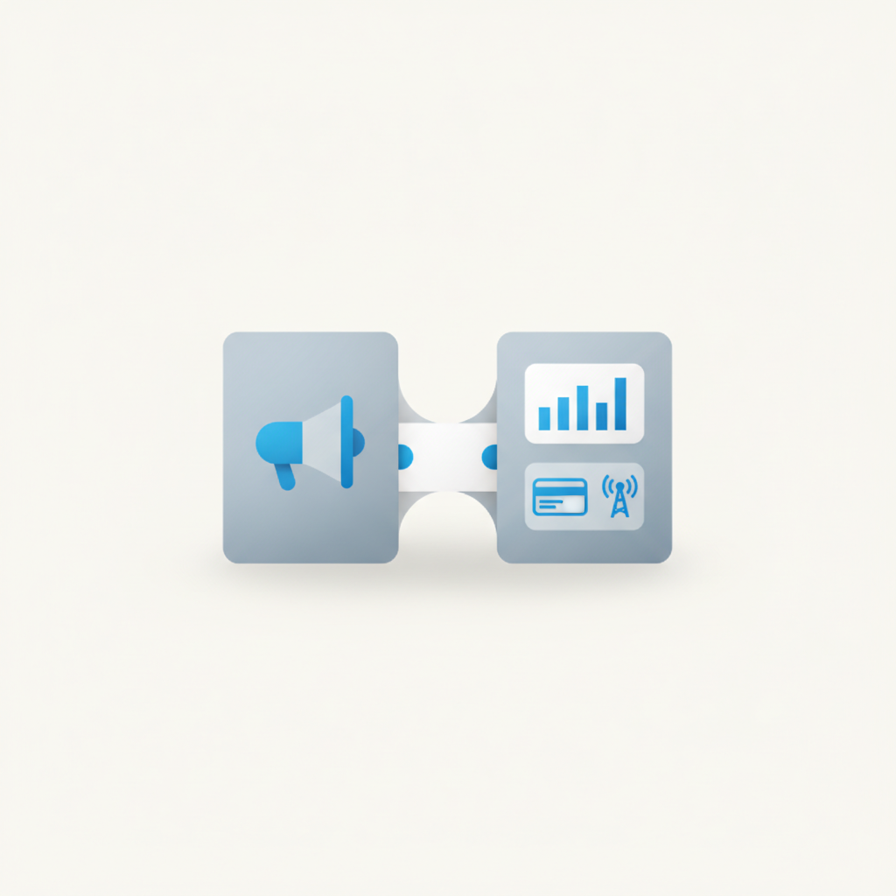
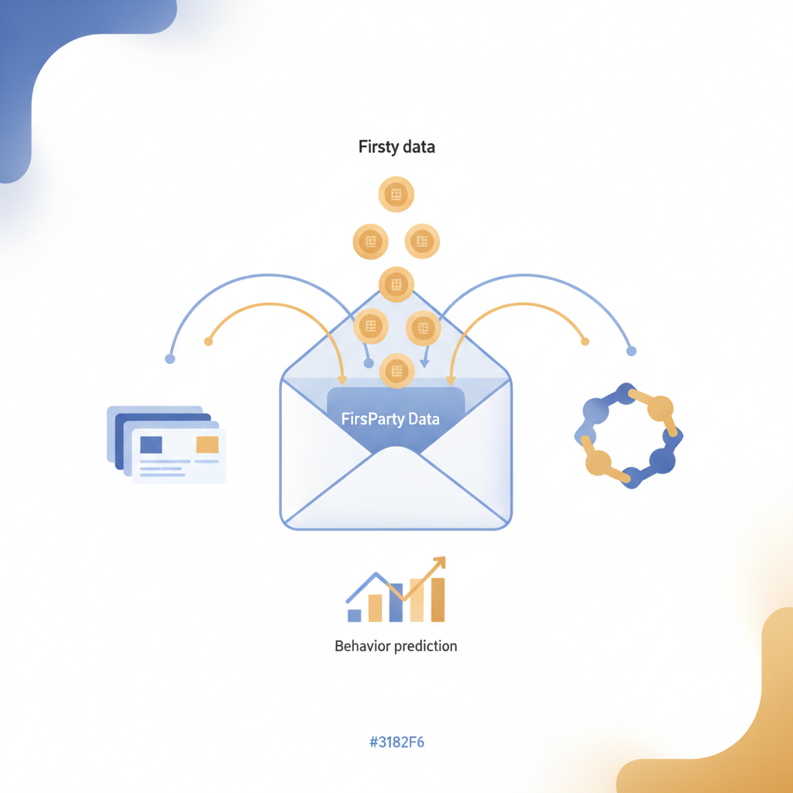
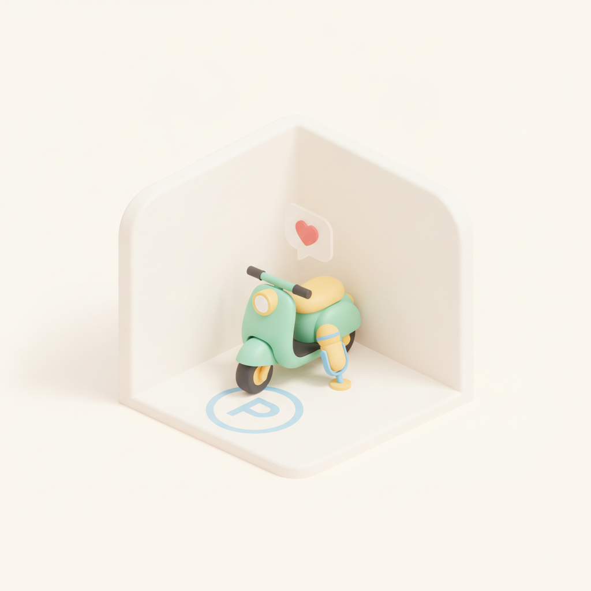

안녕하세요! 금요일 마케팅 소식 전해드립니다 😊 오늘은 AI 검색 확산이 가져온 변화가 화제입니다. 검색 순위 1위를 지키고 있어도 챗GPT·Perplexity·Google AI Overview의 답변에 브랜드가 한 번도 인용되지 않는 사례가 늘고 있는데, 이는 SEO의 목표 자체를 다시 정의해야 한다는 신호입니다. 클릭을 유도하는 것과 AI 답변 안에 포함되는 것은 전혀 다른 게임이고, 두 가지를 동시에 설계해야 하는 시대가 본격적으로 열리고 있습니다.
빌더조쉬의 커맨드스페이스 구요한 인터뷰도 오늘 함께 읽어볼 만합니다. 노트 1만 개를 쌓아온 이 고수가 AI에게 맡기는 일의 기준은 '아는 일'뿐이라는 원칙이 핵심입니다. AI를 잘 쓰는 사람일수록 도구에 더 많이 의존하는 게 아니라, 자신이 무엇을 알고 무엇을 모르는지를 먼저 명확히 정리해둔다는 이야기입니다. AI 도구가 빠르게 늘어나는 요즘, 어떤 도구를 쓸지보다 내가 무엇을 맡길 수 있는 상태인지를 먼저 따져보는 것이 더 중요한 질문일 수 있습니다.
이번 주도 수고 많으셨고, 오늘 하루도 좋은 인사이트와 함께 힘차게 시작하시길 바랍니다! 🙌
CJ메조미디어가 서울·경기 및 5대 광역시 거주자 약 1,000명을 대상으로 패션·금융 업종 소비자 구매 및 미디어 이용 행태를 분석한 '2026 업종 분석 리포트'를 발행했다. 패션 소비자의 39%가 AI를 활용해 상품 정보를 탐색한 경험이 있다고 답했으며, 패션은 인스타그램 숏폼, 금융은 유튜브에서 광고 접촉이 많은 것으로 나타났다. 업종별로 효과적인 광고 채널이 다르게 나타나는 만큼, 마케터는 업종 특성에 맞춰 미디어 믹스를 차별화할 필요가 있다.
› 2검색 순위는 유지되고 있어도 ChatGPT·Perplexity·Google AI Overview 등 AI 검색 답변에 브랜드가 포함되지 않는 사례가 늘고 있다. 기존 SEO 지표만으로는 AI 검색 환경에서의 실제 노출 성과를 파악하기 어렵고, 콘텐츠를 꾸준히 발행해도 AI 인용으로 이어지지 않는 구조적 변화가 진행 중이다. 마케터는 기존 클릭 중심의 SEO 지표 외에 AI 검색 인용 여부를 별도로 모니터링하고 콘텐츠 전략을 재설계해야 한다.
›
3구글 검색 화면에 이미지·동영상·리뷰·지식 패널 등 다양한 정보가 함께 노출되고, 생성형 AI가 검색어에 직접 답변을 작성하면서 기업이 살펴야 할 검색 노출 위치가 크게 늘었다. 웹사이트 트래픽의 평균 36%가 자연 검색에서 유입되는 만큼 SEO의 중요성은 유지되지만, 단순 순위 추적을 넘어 다양한 노출 유형을 관리하는 전략이 요구된다. 마케터는 AI 검색 환경을 염두에 두고 콘텐츠 구조와 최적화 기준을 새롭게 정립해야 한다.
›
4틱톡 코리아는 기업의 핵심 고민이 '어느 플랫폼에 광고할 것인가'에서 '어떤 AI로 비즈니스를 확장할 것인가'로 이동했다고 진단했다. 틱톡은 제품 이미지와 설명만 입력하면 영상 광고를 자동 완성해 주는 기능을 포함해 최상위 영상 생성 AI 모델을 광고주에게 무료로 제공하고 있다. 광고 소재 제작 비용과 진입 장벽을 낮추는 방향으로 플랫폼 경쟁이 심화되는 만큼, 마케터는 AI 광고 제작 툴 활용 전략을 적극적으로 검토할 필요가 있다.
›
5PR·브랜드 전략 중심의 하이퍼앰코리아가 신한카드 빅데이터연구소장 출신 장재영 대표가 설립한 데이터·퍼포먼스 마케팅사 루츠앤윙스와 합병했다. 루츠앤윙스는 카드사·통신사 소비 데이터 기반 타깃 마케팅, AI 마케팅 자동화, AEO·GEO 컨설팅 등을 강점으로 한다. 브랜드 전략과 데이터 퍼포먼스를 한 조직에서 운영하는 통합 에이전시 모델이 업계 트렌드로 자리 잡고 있음을 보여주는 사례다.
›
6서드파티 식별자 활용이 줄고 개인정보 보호 규제가 강화되면서 이메일 주소의 중요성이 오히려 커지고 있다. 이메일 마케팅 플랫폼은 단순 발송 도구를 넘어 고객 데이터 연결, AI 기반 행동 예측, 멀티채널 마케팅 관리까지 역할을 넓히고 있다. 마케터는 이메일을 퍼스트파티 데이터 허브로 재정의하고, 플랫폼의 AI·데이터 통합 기능을 적극 활용하는 전략을 검토해야 한다.
›
7공유 모빌리티 지쿠 운영사 지바이크가 8월 공개한 '올바른 주차' 캠페인은 지쿠에 '구석을 좋아하는 내향인'이라는 고유 캐릭터를 부여해 주차 권장구역이 구석에 위치하는 현실을 유머러스하게 풀어냈다. 배우 엄태구가 내향적인 지쿠의 목소리와 현장 운영팀 직원 역할을 동시에 맡아 1인 2역으로 등장하며 메시지를 자연스럽게 전달했다. 브랜드 행동 유도 메시지를 캐릭터 정체성과 연결해 캠페인 기억도를 높인 사례로, 마케터에게 참고할 만한 크리에이티브 전략을 제시한다.
›커맨드스페이스 구요한 인터뷰 — 기록의 규칙에서 AI에게 맡길 일의 기준까지
브랜드 진단부터 지금 당장 해야 할 우선순위까지,
30분 무료 상담에서 함께 정리해드려요.
이미 수십 개 브랜드가 상담받았습니다.
내 브랜드처럼, 함께 고민하는 팀원의 마음으로 봅니다.
스타트업 대표·마케팅 담당자를 위한 30분